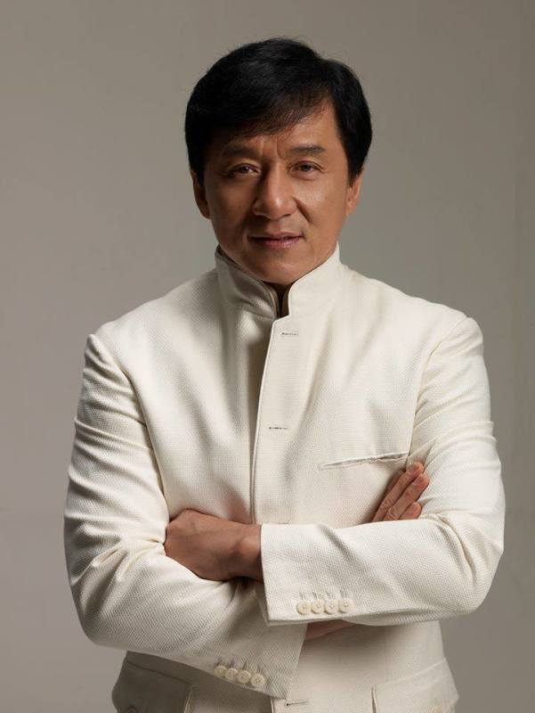

Народився в Гонконгу в бідній родині і в дитинстві потрапив до Академії драматичного мистецтва.
Там він роками освоював жорстку школу кунг-фу, акробатики, вокалу та сценічної майстерності.
На початку кар'єри він працював каскадером і навіть перетинався на знімальному майданчику з легендарним Брюсом Лі.
Після смерті Лі продюсери намагалися зробити з Джекі його копію, але цей образ йому зовсім не підходив.
Тоді Чан створив власний унікальний жанр, об'єднавши бойові мистецтва з комедійною ексцентрикою.
Проривом стали фільми «П'яний майстер» і «Змія в тіні орла», які закріпили його новий комедійний стиль.
Джекі принципово відмовився від дублерів, виконуючи найскладніші та смертельно небезпечні трюки самостійно.
За десятиліття зйомок він отримав незліченну кількість важких переломів, вивихів та травм голови.
Світове визнання та довгоочікуваний успіх у Голлівуді прийшли до нього після бойовика «Розборка в Бронксі».
Культова франшиза «Година пік» остаточно закріпила за ним статус суперзірки світового масштабу.
Крім акторської гри, Чан проявив себе як успішний режисер, продюсер, сценарист і талановитий співак.
За свою кар'єру він знявся у понад ста фільмах і потрапив до Книги рекордів Гіннесса за кількість трюків.
У 2016 році видатний внесок артиста в кінематограф був відзначений почесною премією «Оскар».
Має свої зірки на Авеню Зірок у Гонконгу та на Аллєї Зірок У Голлівуді.
Джекі активно займається благодійністю, є послом доброї волі ЮНІСЕФ та допомагає нужденним.
Сьогодні Джекі Чан залишається живою легендою, чий неповторний стиль надихає мільйони людей по всьому світу.
Rush Hour, 1998
Armour of God, 1986
Police Story, 1985
Drunken Master, 1978
Rumble in the Bronx, 1995
Project A, 1983
Shanghai Noon (2000)
The Tuxedo (2002)
Around the World in 80 Days (2004)
The Karate Kid (2010)